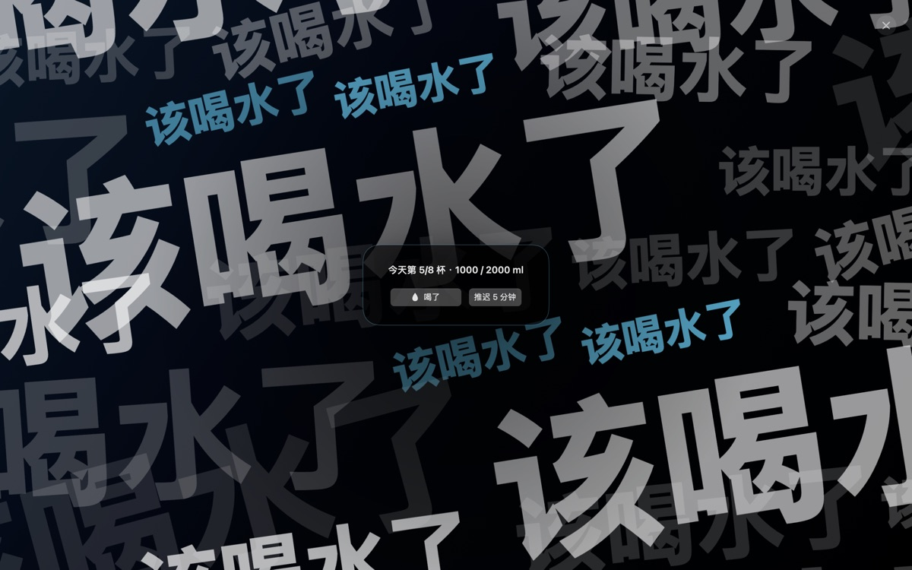
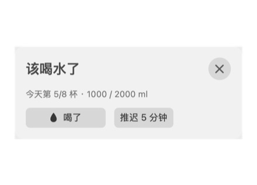
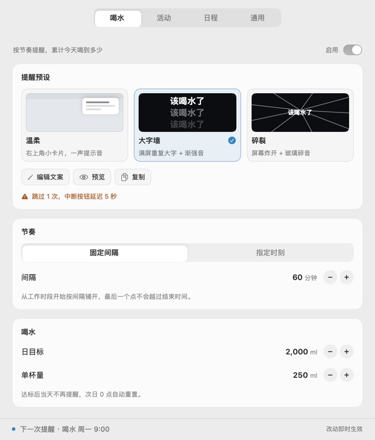
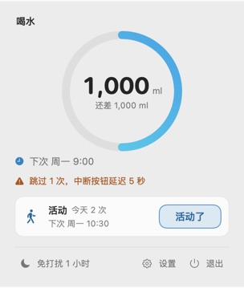

macOS 14+ · 菜单栏常驻 · 开源
把提醒本身，
当成产品做。
常驻 macOS 菜单栏的身体节律提醒：该喝水、该起身活动、该进下一场会的时候，用一套能打断心流的提醒呈现，把你从工作里拽出来。
- 零权限
- 零账号
- 零遥测
- 数据只在本机

为什么做它
“太温柔了。我知道我要喝水，但我就是停不下来工作。”
系统通知横幅、角标、轻轻一声“叮”——对“停不下来”的人等于零。现有提醒工具把“提醒长什么样”当成写死的功能，把“强制”藏进 JSON 开关。Barge In 的出发点是：提醒的呈现方式就是产品。
同一句话也适用于日程：日历 App 会在会前五分钟给你一条横幅，而你会把它划掉。Barge In 做的是同一份日历，不同的打断强度。
现在有什么 · v0.3
一份提醒，从软到硬
平时它不存在；该出现的时候，它认真出现。
-
两套呈现，强度可选
温柔：右上角卡片 + 提示音。大字墙：满屏重复大字 + 渐强音，标准档可推迟，强硬档不可推迟、中断先锁 5 秒。每张卡都能单独预览。
-
跳过越多越硬
违规账本按场景各记一份：跳过越多越硬，完成一次回落，次日归零。界面上会告诉你为什么这次变硬了。
-
三种结束方式
喝了 / 活动了（1 秒内连按两次 Enter）、推迟 5 分钟、中断（双击 Esc 或 ×，立刻生效、零等待）。
-
两个场景，各自记账
喝水有日目标、单杯量与今日进度，达标即静默；活动到点起身舒展，没有每日目标。调度、预设、账本各归各的。
-
同时到点，不吞提醒
按队列逐条呈现：关一条立刻下一条，提醒层显示“还有 N 个提醒”；每个场景最多一条，不静默丢弃。
-
人不在，就不提醒
锁屏、屏幕睡眠、切到别的用户时不采集到点，正在显示的那条也一并收起；回来时日程按“开始后 10 分钟”补，节奏类等下一个点。
另外还有：调度支持固定间隔或每天指定时刻，可设工作时段与休息日；免打扰 1 小时、开机自启；设置分喝水 / 活动 / 日程 / 通用四个 tab。
界面
它长这样
实机截图，未做修饰。



日程 · 已上线
同一份日历，不同的打断强度
- 订阅你已有的日历，事件开始前 N 分钟（默认 5）把你拽出来。只读，不排期、不改事件。
- 两种只读来源：一条日历地址（Google 秘密地址 / iCloud 公开共享 / Outlook 发布链接 / Nextcloud 公开分享），或一套 CalDAV 凭据（钉钉、企业微信、飞书、iCloud 私有、Fastmail、Nextcloud）。
- 只发读请求（GET / PROPFIND / REPORT）：不写回、不新建、不删除、不读参会人；可以同时订阅多条来源。
- 日程豁免工作时段与休息日：19:00 的会、周六的日程照常提醒，免打扰仍然生效。
- 拉取失败不丢提醒：按上次缓存继续提醒，并明说数据可能过期。出厂停用，添加订阅并成功拉取后才提示开启。
日程是整个产品唯一会离开这台机器的功能：只向你填的地址做只读请求，不上传任何内容，没有账号体系，没有遥测；关掉场景或删掉订阅，就再也没有请求。
设计取舍
不劫持，不硬来
不劫持系统
不拦键盘、不改系统音量、不阻止切 App。展示时短暂取得键盘焦点（双击 Esc 可中断），关闭后把前台还给原 App。强度来自“下次更硬”，不来自“这次逃不掉”。
零系统权限
不用通知中心、不用辅助功能、不用屏幕录制、不用 Apple Events。联网不是权限，它是产品对用户的一次性例外。
联网是例外，不是常态
日程是唯一会离开这台机器的功能，且只读。关掉日程场景或删掉订阅，就再也没有任何请求。
开源 + 内容收费
代码全公开、功能全开；将来收费的是预设——视觉做法、音效、文案。
开始用
下载，或者自己构建
已发布 v0.3.0：下载安装（约 2 MB，macOS 14+，Apple Silicon）。ad-hoc 签名、未公证，首次打开被 Gatekeeper 拦下时右键 →「打开」，或执行 xattr -d com.apple.quarantine "/Applications/Barge In.app"。
也可以自己构建：需要 macOS 14 与 Command Line Tools（不需要完整 Xcode）。开发时直接 make run；想看一次提醒长什么样，不用等到点：--demo。
代码开源于 MIT 许可，欢迎 issue 与 PR。
git clone https://github.com/qiqiangvae/BargeIn.git
cd BargeIn
make app # 产出 "Barge In.app"（ad-hoc 签名）
open "Barge In.app"